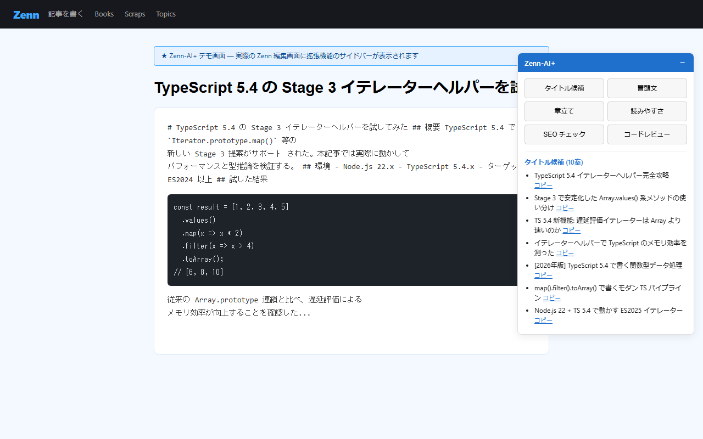
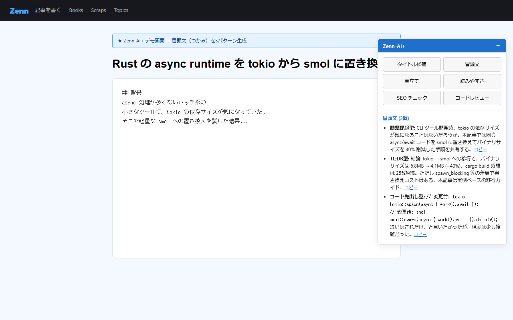
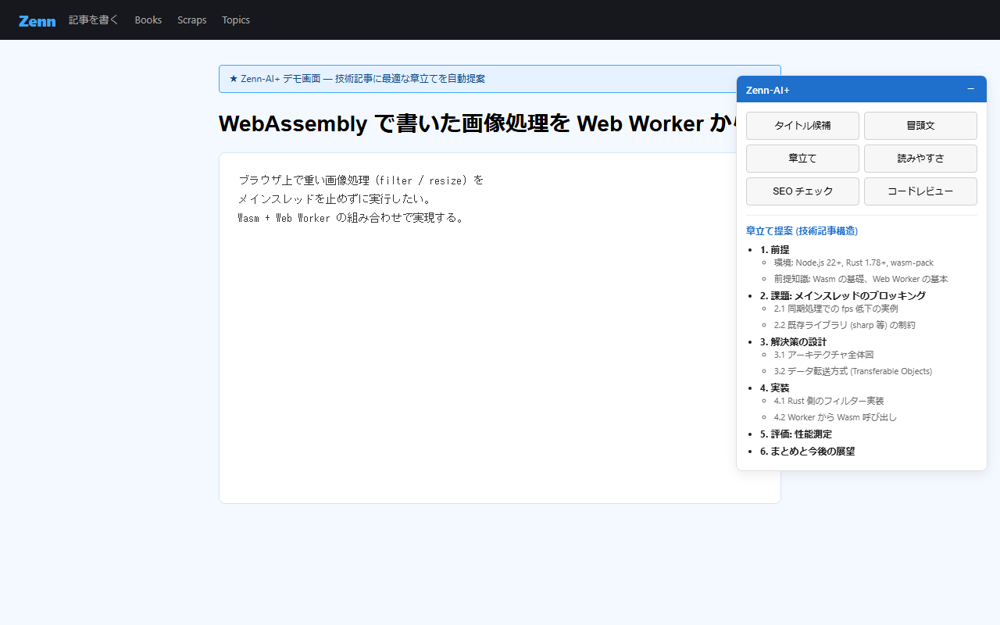

6つの機能（技術ブログ特化）
技術タイトル候補 10案
「〜してみた」「〜で解決した」「〜のすべて」など Zenn でクリックされるパターンを意識。技術スタック名・バージョンを自動で含める。
冒頭文 3案
「問題提起型」「TL;DR 型」「コード先出し型」の 3 パターン。技術記事らしい書き出しを即座に。
技術記事構造 章立て
「前提→課題→解決→評価→まとめ」のエンジニア的な章立てを提案。PREP より技術ドキュメントに馴染む。
Zenn 限定
コードレビュー
記事内のコードスニペットを AI がレビュー。構文エラー・セキュリティ問題・ベストプラクティスを指摘。公開前の品質チェックに。
読みやすさ評価
漢字比率・1文長さ・コードブロック比率を可視化。技術記事に最適なスコアを API コストゼロで即算出。
技術 SEO チェック
狙うキーワード（ライブラリ名・言語名等）の出現密度を確認。Zenn 内検索と外部流入の両方を意識。
スクリーンショット





料金
無料
¥0
すべての基本機能が使えます
- タイトル候補 / 冒頭文 / 章立て
- コードレビュー / 読みやすさ / SEO
- API キーはあなたのもの (Claude / OpenAI)
Pro (近日)
¥980 /月
継続的に技術記事を書く方向け
- 技術プロンプトテンプレライブラリ
- 生成履歴の保存と再利用
- 複数 AI 同時比較 (Claude × GPT × Gemini)
- テキスト読み上げプレビュー
よくある質問
- 本当に無料?
- はい。基本機能は無料です。ただし AI 利用料はお客様自身の API 契約に従って発生します (Claude Haiku なら 1 記事あたり数円〜数十円程度)。
- コードレビュー機能でコードが流出しない?
- コードはあなたの API キーを通じて AI に送信されます。私たちのサーバーは一切経由しません。Anthropic / OpenAI の利用規約が適用されます。
- Zenn 公式の機能ですか?
- いいえ。本拡張機能は Zenn 運営会社の公式製品ではありません。個人開発者によるサードパーティ製品です。
- データはどこに保存される?
- API キーや設定はすべて あなたの Chrome のローカルストレージ にのみ保存されます。本拡張機能の運営者にデータは送られません。
- 同じ Kakeru の noteAI+ との違いは?
- noteAI+ は note.com 向け（一般ライター向け）、Zenn-AI+ は Zenn 向け（エンジニア向け）です。コードレビュー機能と技術記事特化のプロンプトが追加されています。